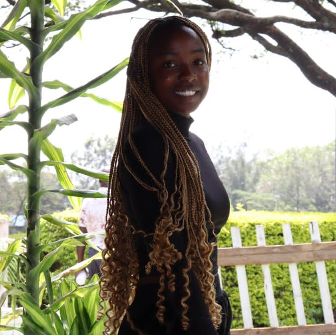

PHOEBE NYAKAMBI
Qatar airways pilot
|

|
About Me
A proffesional pilot specialised in flying commercial planes across the world
Education
I began schooling at the age of 3 years , i studied at the Greenview kindergaten and joined the Riverside academy where i sat for my kcpe after 8 years and scored 391 marks .I then joined the Maryhill girls high school where at the end of 4 years i scored B plain.afterwards i joined the Kenya school of flying and undertook piloting for two years and graduated as a commercial airline pilot.I secured myself a job at The Qatar Airways.
Services

Flying commercial planes
Adept at coordinating flight activities and test schedules to support safe and effective operations.knowledgeable in adjusting plans based on changing mechanical,air and ground conditions.

Airline captain
Mantained accurate documentation of aircraft maintainance activities using Traaxxall,achieving a 98% compliance rate . Executed precise takeoffs and landimgs ,which provided passengers with a comfortable flyimg experience with a 94% customer satisfaction rating.

Delta Corporation
Plan and initiate computerized or manual measurements as part of the regular process or far specific problem analysis.Cross reference measurement data with technical drawings and other specifications .
Experience
Flying commercial aircraft in compliance with company policies and FAA aviation regulations.
Manage cockpit and crew resources,ensuring safe ,timely and comfortable flights and excellent customer service and exceptional passenger experience.
Ensure flawless flights by examining and analyzing operational equipment,navigational controls ,fuel levels and communication tools.
Schedule FAR Part 121 transport operations throughout the United States,Canada,Mexico,and the Carribean.
Accomplished 1,300+ flight bours including 470 nightmare and 600 crosscountry hours.
Skills
Dispatcher Ordessa,TX Mantained decaled administrative and procedural processes to improve accuracy and efficiency.
Verified and logged in deadlines for responding to daily inquiries.
Mantained job board and scheduling for 30 frac jobs.Updated customer information daily.Organized daily job reports for the management department.
Achievements
Air Mobility Command Jabeca award winner
21st airforce outstanding Aircrew of the year
436th operations Group Pilot of the year
Distinguished graduate
Outstanding second lieutenant.